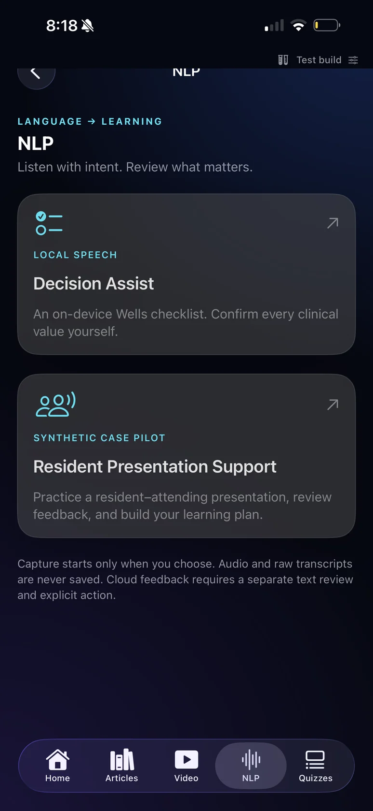

New · Resident Presentation NLP · Pilot
Reveal the patterns
in your reasoning.
Turn resident–attending presentations into succinct, actionable feedback. Revisit the key points, notice patterns across presentations, and use those insights to guide what you learn next.
Connects to your knowledge profile

Resident Presentation SupportFeedback that reveals
what to focus on next.App preview · synthetic case pilot
what to focus on next.App preview · synthetic case pilot